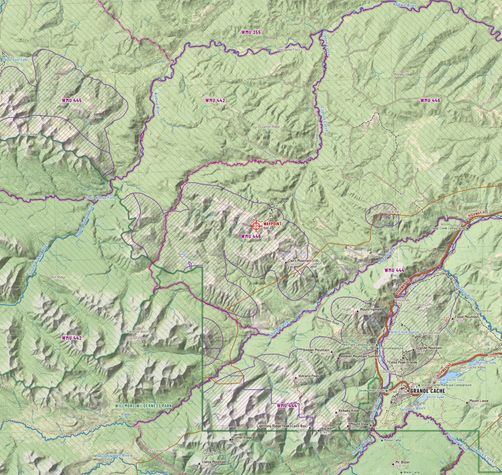

Wildlife
What lives on the ridge
Caw Ridge carries nearly the whole cast of the northern Rockies on one small piece of alpine: goats, sheep, caribou, grizzlies, wolves, and the elk, moose and deer of the timber below. Some you may hunt. Several you may not.

Mountain goat Closed in 446
The waypoint lies inside the range the province maps for mountain goat and bighorn sheep. The goats of Caw Ridge are the subject of the longest study of the species anywhere. Biologists from the Université de Sherbrooke and Université Laval, working with Alberta Fish and Wildlife, have followed them since 1989, marking kids and recording who lives, who breeds and who dies. By 2009 they had marked 427 animals. The herd has numbered between about 76 and 160, and was reported in decline through the 2010s.
- They have not been hunted since 1969. There is no goat season in WMU 446.
- They use the alpine between about 1,750 and 2,170 m, never far from steep ground to escape to.
- The study found that goats are easily disturbed. A quad approaching fast is likely to put them on alert for ten minutes or send them running more than 100 m, and helicopters within 500 m moved them most of the time. Keep your distance, slow down, and do not approach for a photograph.
- The rut is in mid to late November. Billies travel then.
- Adult nannies survive at about 89 percent a year, billies 83, kids 63. A nanny first breeds at almost five years old. It is a slow herd to rebuild, which is why it is protected.
Bighorn sheep Draw only
About 250 bighorns were counted on and around the ridge in the study's time, mostly on its eastern part and the adjacent lands. Both sheep seasons in 446 are by draw. If you hold the tag, the ram must make four fifths curl; judge it from the side, at rest, through a spotting scope, and if you are unsure, he is not legal. The sheep rut runs from late November into December, after the season has closed.
Woodland caribou Closed
The ridge lies on a migration route of the Redrock-Prairie Creek herd, which moves between summer range in the mountains and winter range in the foothills forest. Counts have fallen for decades: about 96 animals were estimated in that herd in 2017. Woodland caribou are a threatened species and there is no season.
Caribou or elk
In timber and poor light a caribou can be taken for a cow or young bull elk. Caribou are smaller and paler, with a white neck and mane, a white rump without the elk's tan patch edged in dark, and large splayed hooves. Both sexes carry antlers, and a caribou's are flattened and sweep forward with a brow shovel over the face. If it is not plainly an elk with six points, do not shoot.
Grizzly bear Closed
You are in Bear Management Area 2, Grande Cache, and the province's own map puts the waypoint inside the core recovery zone. A 2008 survey put the density here at about 18 bears per thousand square kilometres, the highest in the province outside the national parks. Riders report fresh tracks on the access roads as a matter of course. There is no grizzly season in Alberta.
Black bear or grizzly
Colour tells you nothing: black bears here are often brown or cinnamon, and grizzlies can be nearly black. Look for the shoulder hump and the dished face of the grizzly, its short round ears and its long pale claws. A black bear has no hump, a straight profile from forehead to nose, and taller ears. Size is a poor guide. If you cannot see the shoulder line and the face, you have not identified the bear.
Elk General, six point
Elk use the timber, the cutblocks and the valley meadows below the ridge, and climb to the subalpine edge in fine weather. The rut in this country runs through September and tails off by mid October, so the early rifle season catches the end of the bugling. After that the bulls go quiet, break into bachelor groups and feed hard. Look to the forest edge, south-facing openings and regenerating cuts at first and last light.
Moose Draw for rifle
Moose keep to the wet ground: willow flats, beaver ponds and the creek bottoms of Beaverdam, Caw and Copton creeks. The rut peaks in late September and early October, which is when bulls answer a call. The cover map shows wetland and shrub in the valley floors.
Mule deer and white-tailed deer General
Mule deer are the deer of the high country and the subalpine edge; white-tails keep to the valley bottoms and the river flats. The mule deer rut runs from late October and peaks in mid November, which falls inside the season and is when the big bucks show themselves in daylight.
Black bear, wolf, cougar
Black bears are common in the timber and on autumn berry slopes. Baiting is not allowed in 446. Wolves and cougars are both present and both prey on the goats; you are far more likely to see sign than the animal.
Birds and small company
Nobody has published a bird list for this ridge that this guide could find, so take this as what the northern Rockies alpine usually holds rather than a record: spruce and ruffed grouse in the timber, dusky grouse near treeline, ptarmigan on the tundra. The goat study does record golden eagles, which take kids when they can, along with wolverine and coyote.
The rut, by the calendar
| Species | Rut | Peak | Against the 2026 season |
|---|---|---|---|
| Elk | 1 September to 15 October | Mid to late September | General season opens 17 September, on the peak |
| Moose | Late September to mid October | First days of October | Rifle season opens 24 September |
| Mule deer | Late October to early December | Mid November | Inside the season, which closes 30 November |
| Mountain goat | November | Mid to late November | No season |
| Bighorn sheep | Mid November to mid December | Late November | Season closes 31 October |
Rut dates are general figures for Alberta and the northern Rockies, not measured on this ridge.